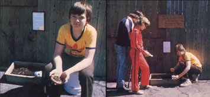

A twelve-year-old worm raiser changed the New York state sales tax law and proved that . . .
Kids Can, Too, Make A Difference
MOTHER feels strongly that youths can be creative "doers"; working toward more ecological and self-reliant lifestyles . . . whether their tasks be raising chickens on a farm or maintaining rooftop container gardens in the city. To support the endeavors of our often overlooked "underage" citizens, we're glad to publish well-written articles from younger children and teenagers concerning projects they've undertaken. However, we recommend that all young authors query (that is, send us a letter telling about the story you'd like to do) before writing a fullarticle. Address inquiries to Mother's Children, THE Mother Earth News(restricted), P.O. Box 70, Hendersonville, North Carolina 28791.
Jody Gerard, "the Worm King, Jr."
Jody shows and sells the creatures that earned him the name "Worm King, Jr."
A copy of the law he changed hangs behind him
I raise and sell worms. My hobby is fun, earns me spending money, and lets me perform a service to the anglers in my community. That's not all, either: You see, my little bait business got me involved in a fight that actually changed the tax law of my entire state.
It all started when a neighbor named Mr. Landie offered my brother John a chance to sell worms. Mr. Landie had been running a bait stand of his own, but he was having trouble getting along with the tax department, so he wanted to quit. He decided to set John up in the business, though, figuring the tax people wouldn't bother kids . . . but little did he know how wrong he was about that!
HOW I GOT INVOLVED
Mr. Landie gave John some books on raising worms, but my brother decided to go the easy route and just dig up night crawlers and sell them. Then, when he reached 13, John discovered girls and didn't want to even dig worms anymore. I was nine years old at the time and always around, so I became the bait dealer.
The only problem was that, being little for my age, I had a hard time digging the worms. I didn't like the blisters I got on my hands or the mosquitoes that tried to eat me alive. Then Mr. Landie died, and his sons gave me all his books on the worm business, so I decided to try to raise my bait supply. I had my dad send to Hugh Carter, the Worm King (in Plains, Georgia) for 1,500 red wiggler worms. (That cost me around $12.)
The wigglers weren't real big, so I put them in a half-barrel with pig manure, dirt, and lots of water until they grew to be about three inches long. By that time it was September. I sold my worms until the end of October, when Halloween took over my mind and I forgot all about them. By the time I remembered those worms, they'd all frozen stiff:
The following spring, my dad dumped the contents of my worm barrel on his compost heap. A few weeks later, I was looking for some glass worms in the compost pile. (They're a kind of local crawler that's supposed to be too brittle to use on a fishing hook, but I wanted to experiment with ways of toughening them up until I could write to Mr. Carter for more worms.) To my surprise, I found thousands of red wigglers in the compost . . . their eggs had hatched in the pile!
My mom and I spent hours picking up the little red worms and putting them in 4" X 12" X 18" wooden boxes I made. We also went out on rainy nights and gathered night crawlers. By June I was back in business again . . . and offering two different types of worms.
At the same time, I went ahead and tried to toughen up some glass worms, but those experiments were pretty much hit-or-miss. I tried raising the brittle crawlers in sand, leaves, a manure with hay mix, wet newspapers, and plain dirt . . . but nothing seemed to make any real difference. Then one day my little sister and I were fooling around, and we knocked over a bag of peat moss. I dumped some of that and some dirt into the glass-worm boxes and-you guessed it!-the little creatures toughened right up. So that gave me three kinds of worms to market.
Over the course of that year I sold about $125 worth of worms. Then I convinced my parents to let me bring 25 boxes, with about 1,000,000 red worms, inside for the winter. Every two weeks during the cold months I spread pig feed in the boxes and sprayed them with water. If the food in one container was consumed in less than two weeks, I'd divide the worms in that box into two crates . . . or I'd add some of them to a box that had a low worm count to keep mold from growing on the feed given to those weak groups. (I wasn't able to figure out a way to keep glass worms over the winter, so every spring I have to get a new supply of them from the compost heap.)
While I didn't have much difficulty keeping red wigglers over the winter, I did run into trouble storing night crawlers during the fishing season! Those active creatures need to stay cool, so at first I stored them in a closed container in the bottom of my mom's refrigerator. But one night someone didn't put the lid on tight, and when my mom opened the door the next morning, out fell all the worms!
I had to hurry up and find a new place for my night crawlers after that, so I put 2,000 of them in a neighbor's soda cooler, but they started crawling around in there, too. By the next morning, a lot of them were stuck in the mesh on the machine's cooling pipes. When I saw all those dead worms and remembered the backaches I'd gotten from digging them up in the rain, I came in the house and cried.
Finally, someone gave my dad an old small refrigerator, and he gave it to me. I keep my night crawlers in that now. It works well, and my mom doesn't get mad if the worms do decide to walk around a bit!
HOW THE TROUBLE STARTED
One morning in July of 1979, I was having breakfast when the mail came. There was a letter for me from Albany, the state capital. As I read it, I first thought someone was playing a joke on me. Then I got scared that I might be in real trouble.
The letter said that the New York Department of Taxation had found out I had a bait sales business. They wanted me to get a tax permit number and to charge 7% state tax on all my sales. They said if I didn't comply, I would be taken to court.
"Oh boy," I thought, "they might even take my trail bike."
I called the lady whose name was on the letter and told her that I only sold about 50 cents of worms a day and didn't know I was breaking any laws. I also explained that I was only 12 years old. When I said that, there was a long pause . . . then she told me someone would call me back.
Well, a man did. He was very nice, but he told me that since I was selling tangible legal property, I needed a tax number and should charge sales tax. He said the tax department would send someone to my house to explain about the forms and my payment. Some man did come down and told me that, beginning that month, I had to pay sales tax. It turned out that I owed 64 cents (for the $9.20 worth of worms I'd sold in July). I had to pay the money with a certified bank check, too . . . and that cost me an extra dollar!
By this time I was mad enough to try to get the sales tax law changed. So I started a media campaign. I spoke to everyone who'd listen, saying the law was unfair. I explained that it took the incentive for earning spending money away from children and was "taxation without representation". Besides, I told them, it was silly . . . it cost the government more money to collect the tax than it was worth. After all, I wasn't running a big business. In fact, I wasn't even running a small business . . . just a child's business.
The day the tax man came, I called a local news station and explained what had happened to me. A TV crew showed up and covered my story. The newspapers reported it, too.
Boy, the media really can be great. I would have gotten nowhere without their help. I had tried to reach my area's state representative, you see, but he never called me back. (After I got a lot of publicity, he finally came around to my side . . . I guess water always flows downstream.) When I couldn't get help from him, my mom and I went to the state capital, and I talked to everyone who would listen there.
Finally, Mr. James Emery, the minority leader in the state assembly, put up a bill on my behalf. He invited my whole school class to Albany. We went, and I got to speak before the legislature. Newspaper and TV and radio people were there, as well. And thanks to them all, a law was passed. It was nicknamed the Worm Bill (sometimes it's even called the Jody Bill). It says that no one under 16 has to charge sales tax in New York state for any backyard business that makes less than $600 a year.
I worked very hard to change the law, not only for my sake but also for the sake of all the kids in New York. I think my experience helped show a lot of adults that youngsters are people, too, and that they can even change unfair laws!
Thanks to all the publicity I got, my own business really picked up after that. I made about $200 the rest of that summer, and probably about $300 over each of the past two years. That's why I say that since Mr. Hugh Carter (with his big worm ranch down in Georgia) is known as the Worm King, folks can call me the Worm King, Jr.
BACK TO MY WORMS
Let me tell you a little bit more about worms. My initial outlay was about $12 for red wigglers. (I built the boxes from scrap.) I've also invested $6.00 in peat moss. And sometimes I have to buy a bag of pig meal or chicken feed for about $8.50 . . . a 100-pound bag lasts my worms about six months. (I don't have to buy manure, because my father raises pigs.)
As you can see, keeping worms isn't very expensive. It's a good thing to do, too. Worms are very high in protein. Someday they'll be dried and ground up to be used for food, just like soy protein. And worms can do wonders. For example, they're a great way to get rid of any kind of rottable garbage. In fact, it's said that you could add a few million worms to a pile of garbage ten feet high, and in a year or less you'd have a two-foot mound of the best soil around.
Someday people will realize that the lowly worms can help save this earth. But in the meantime, I'm just glad for what they did for me.
EDITOR'S NOTE: Hugh Carter sells 1,000 red wiggler worms for $8.95, and a basic text-Raising the Gray Cricket and How to Raise and Sell the Hybrid Redworm-for $2.95. Order from the Carter Worm Farm, Dept. TMEN, Box 99, Plains, Georgia 31780. (Please add 10% for shipping and handling if your address is west of the Mississippi River.)
|
|
|
 |